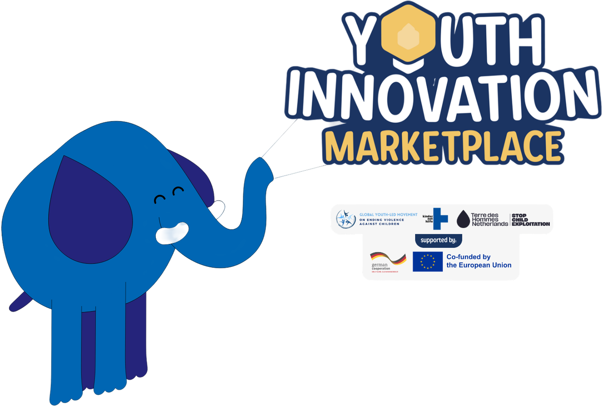
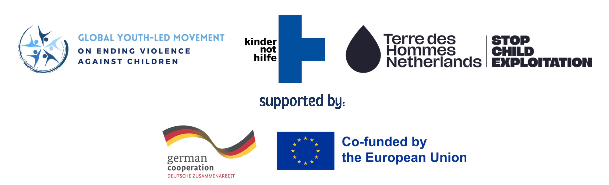
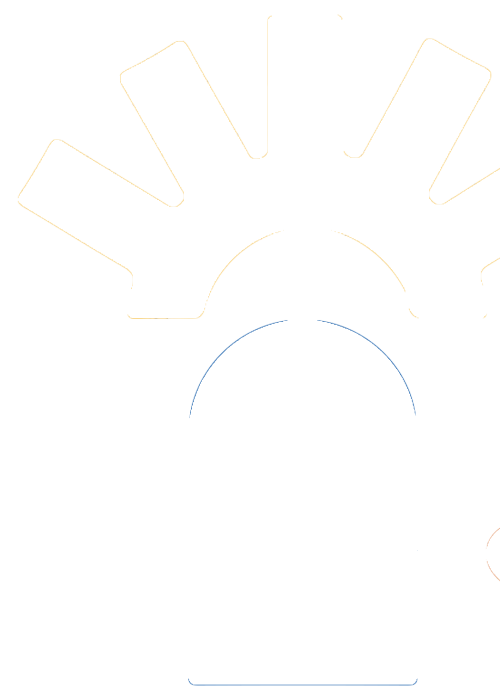

Scalable Solutions to End Violence Against Children
“From Pledges to Protection: Youth-Led Solutions in Action”
A dynamic, participatory bridge connecting 20+ frontline youth-led solutions across the globe directly with ministers, senior government officials, international funders, and institutional leaders.


In collaboration with youth-led organizations and youth delegates from the Violence Ends With Us Regional Summit.

ABOUT THE MARKETPLACEA Turning Point in Global Child Protection
Moving beyond mere consultation toward genuine youth leadership, institutional investment, and lasting systems change.
From Consultation to Co-Creation
The Second Global Ministerial Conference on Ending Violence Against Children (EVAC) in Manila is a momentous occasion for governments and multilateral partners to demonstrate tangible progress on pledges initiated in Bogotá 2024. A defining shift since the first conference is the clear recognition of children and young people not merely as vulnerable beneficiaries, but as vital co-architects of protection systems.
6 Months of Rigorous Piloting
Building directly on the Violence Ends With Us Regional Youth-Led Summit held in the Philippines in April 2026, 10 to 20+ youth-led solutions have spent six months testing, piloting, and gathering field evidence. The Marketplace gives them an international stage to present verified results, lessons learned, and clear roadmaps for regional scale.
An Interactive, Non-Traditional Space
Rather than standard panel lectures, the Marketplace creates an energetic, participatory exhibition where ministers, international delegates, and grassroots innovators interact directly at demo booths, matchmaking deal rooms, and intergenerational dialogues to forge concrete funding and policy pacts.
The Gap: Solutions Trapped at Pilot Stage
Across the Asia-Pacific region, young innovators possess groundbreaking approaches, yet face structural bottlenecks that keep solutions from reaching millions of children.
The Critical Disconnect
-
Funding Deserts: Youth-led initiatives remain excluded from direct bilateral, multilateral, and domestic child-protection budgets.
-
Technical & Mentorship Barriers: Promising tools lack specialized legal, regulatory, and technological infrastructure to scale safely.
-
Policy Disconnect: Governments frequently develop EVAC frameworks without structured pipelines to adopt proven grassroots innovations.
-
Missed Systems Change: Solutions remain isolated pilots rather than being integrated into national child protection systems.
The Scalability Bridge
-
Direct Ministerial Access: Unfiltered dialogue between youth leaders and high-level decision-makers.
-
Matchmaking at the Deal Corner: Structured one-on-one sessions linking innovations to catalytic capital and technical assistance.
-
Actionable Policy Integration: Visual mind mapping on the Policy Wall to integrate tools directly into national programs.
-
Accountability Follow-Through: Post-conference monitoring mechanisms ensuring commitments convert to resourced reality.
Our Four Strategic Ambition Pillars
Showcase Tested Solutions
Spotlight 20+ promising youth-led models that tackle violence against children across Asia-Pacific and beyond.
Direct Decision-Maker Dialogue
Connect young inventors face-to-face with government ministers, international donors, and development partners.
Elevate Youth Agency
Solidify children and young people as recognized strategic actors in achieving national EVAC pledges.
Institutionalize Policy Scale
Open formal institutional pathways for youth-led practices to be adopted into statutory child welfare systems.
Five Immersive Experience Spaces
An experiential, participatory environment tailored for active discovery, peer learning, targeted matchmaking, and systems-level impact.
Interactive Youth Innovation Booths
Over 20 dedicated innovation stations where visitors get hands-on exposure to live youth projects. Youth innovators will pitch their tools, digital reporting apps, community mechanisms, and present tangible evidence of reduced violence.
The Deal Corner
The heart of marketplace transactions: a structured, youth-friendly coordination space for targeted bilateral conversations between youth initiatives and potential partners. Moving beyond visibility toward commitments for seed funding, tech mentorship, and scale-up.
Call to Action Corner
Amplifying priorities articulated by children and youth across Asia-Pacific: child labour, corporal punishment, child/forced marriage, and online exploitation. Delegates can explore grassroots recommendations and endorse the official petition.
Intergenerational Dialogue
“From Youth Innovation to Systems Change” — A focused plenary conversation bringing together young innovators, government ministers, and global development funders to explore what it truly takes for grassroots tools to become institutional policy.
The Policy Wall
A dynamic visual mind map charting all showcased innovations against regional child protection frameworks. Delegates can pin partnerships, pledge institutional backing, and map connections between grassroots tools and statutory laws.
Asia-Pacific Youth Priority Tracks
Innovations showcased in the Marketplace address the four most urgent child protection themes prioritized by youth leaders from the Violence Ends With Us movement.
Child Labour
Frontline approaches dismantling hazardous economic exploitation through community-led early warning systems, digital re-enrollment trackers, and youth vocational safety nets.
Corporal Punishment
Innovations eliminating violent discipline at home, school, and community settings through positive parenting curricula, peer restorative circles, and youth-led legislative advocacy.
Child, Early & Forced Marriage
Community-grounded models led by adolescent girls, deploying peer hotline networks, safe houses, and community elder engagement to halt early marriages and uphold bodily autonomy.
Online Child Exploitation
Digital tools and AI safety watchdogs created by youth developers to protect peers from grooming, non-consensual imagery, and sextortion across messaging apps and online platforms.
Programme Agenda
17 November 2026 • 9:00 AM – 5:00 PM • Diplomatic Hall, Marriott Hotel Manila
Morning Sessions
07:00 AM – 12:30 PM • Discovery & SpotlightsTeam Arrival & Booth Set-Up
Innovation teams prepare their booths, displays, demonstrations, and interactive activities. Organisers complete final technical, accessibility, safeguarding, and venue checks.
Registration & Marketplace Preview
Guests arrive and begin exploring booths. Participants receive an interactive "Treasure Map" to collect booth stamps for exclusive collaterals and prizes, with youth-produced multimedia content broadcast across the hall.
Welcome & Marketplace Opening
A short standing welcome introducing the purpose of the Marketplace, participating youth innovator teams, and collaborative engagement pathways for visiting guests.
Open Marketplace & Innovation Spotlights
Guests move freely between booths. The roving emcee conducts live booth promotions with camera feeds, spotlighting rapid 3- to 5-minute pitches, demonstrations, and interviews directly with delegates.
Marketplace Energiser
A short interactive youth-led activity, announcement, and youth performance drawing guests together and spotlighting selected booths and activities to visit.
Open Marketplace & Partner Connections
Booth visits continue, with organisers facilitating direct introductions between innovation teams and relevant government, funding, technical, and civil society partners (with dedicated Deal Corner time slots).
Afternoon Sessions
12:30 PM – 05:00 PM • Systems Change & CommitmentsNetworking Lunch (Marketplace Open)
The Marketplace remains open during lunch. Innovation teams rotate to ensure that all participants have time to eat, rest, and network informally with attending delegates.
Afternoon Welcome & Highlights
A brief standing welcome for new and returning guests, highlighting the high-level dialogue and strategic commitment activities taking place during the afternoon.
Open Marketplace & Live Demonstrations
Guests continue exploring booths, participating in interactive activities, and viewing deep-dive repeated presentations and live technology tool demonstrations.
Intergenerational Dialogue: From Youth Innovation to Systems Change
A focused high-level dialogue uniting 4 speakers: young innovators, a government representative, and institutional funding/technical partners (KNH, TDH, Plan Asia, Safe Online, WHO). 20 mins panel responses + 25 mins interactive exchange exploring what youth-led initiatives need to influence policy and secure sustainable scale.
Open Marketplace & Partnership Connections
Guests return to selected booths for focused conversations on funding allocations, technical support, evidence-building, policy integration, and cross-border collaboration or scale.
Commitments & Connections
Guests record tangible offers of support, introduction pacts, follow-up bilateral meetings, and expressions of interest through the physical and digital Commitment Wall.
Youth Reflections & Call to Action
Young innovators share brief reflections from the Marketplace, key lessons from implementing their solutions, and deliver a collective call for sustained investment in youth-led action.
Closing Remarks & Next Steps
Closing remarks acknowledge participating teams and partners, summarize key connections and commitments made, and explain how follow-up will be coordinated after the event.
Youth Preparation Workshop: 14 November 2026 (Half Day)
Designed to support young frontline innovators in honing their pitches, mastering stakeholder engagement, and rehearsing demonstrations prior to the Ministerial Conference.
Participant Arrival & Check-In
Informal arrival, badge release, and welcome check-in.
Welcome & Session Overview
Introduction to the preparation workshop goals and event programme.
Safeguarding & Hotel Briefing
Hotel safety, emergency protocols, and ethical youth safeguarding review.
Workshop: Telling Your Innovation Story
Interactive training on structuring concise, engaging 3-minute innovation pitches.
Workshop: From Networking to Partnership
Practical guidance on introducing initiatives, communicating asks, and engaging funders.
Refreshment Break
Informal networking and group realignment.
Participant Rehearsals & Peer Feedback
Teams rehearse booth spotlights, live pitches, and partnership asks in rotating peer groups.
Marketplace Walkthrough & Booth Practice
Walkthrough of the venue layout, booth locations, presentation flow, and AV setup.
Team Refinement & Final Preparation
Final tuning of demonstrations, collateral displays, and event-day responsibilities.
Closing Check-Out & Next Steps
Confirmation of event-day logistics, schedule, and team support contacts.
Participant & Facilitator Lunch
Informal lunch for participants, facilitators, and organizers.
Why Engage with the Marketplace?
A targeted value proposition tailored for ministers, senior policymakers, international development partners, and civil society.
Ministers & Senior Officials
-
Adopt Grounded Interventions: Identify proven, grassroots models that directly reinforce national EVAC policy frameworks.
-
Deliver on Bogotá Commitments: Showcase tangible fulfillment of ministerial pledges prioritizing child participation.
-
Direct Youth Insights: Hear firsthand analysis on emerging risks like online exploitation and school-based violence.
Development Partners & Funders
-
High-Impact Capital Deployment: Direct catalytic funding to 20+ pre-vetted youth solutions with six months of piloting data.
-
Co-Financing Opportunities: Partner with bilateral donors and multilateral funds at the Deal Corner.
-
Sustainable Follow-Up: Rely on consortium-backed monitoring to track the ROI and impact trajectory.
Civil Society & Youth Coalitions
-
Cross-Regional Solidarity: Forge partnerships between local grassroots groups and international INGO networks.
-
Ethical Participation Benchmark: Experience safe, dignified child and youth agency in practice.
-
Policy Advocacy Coalitions: Leverage the collective Call to Action to demand systemic legal reforms.
Child Safeguarding & Ethical Participation Protocol
The safety, wellbeing, agency, and dignity of child and youth delegates are non-negotiable. All delegates, organizers, government ministers, and guests are strictly required to uphold and comply with the Youth Marketplace Safeguarding Policy.
This includes ethical consent protocols for photography and filming, zero-tolerance for any form of harassment, intimidation, or tokenism, and accessible, youth-friendly safeguarding reporting desks throughout the Marriott Hotel venue.
Event Contacts & Leadership
Reach out directly to the co-convening consortium for inquiries on participation, media, booth applications, or partnerships.
Bryanna Marinas
Founder Global Youth-Led Movement on Ending Violence Against Children bryanna.marinas@gmail.comEvent Location & Accessibility
Marriott Hotel Manila • Diplomatic Hall
Newport World Resorts, Pasay City, Metro Manila, Philippines
Fully wheelchair accessible • English interpretation available • Open entrance